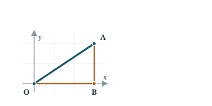
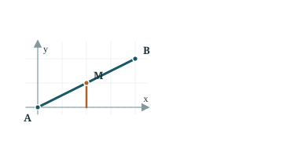
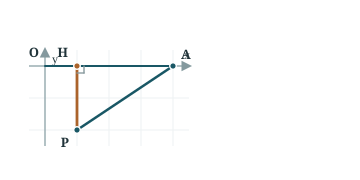
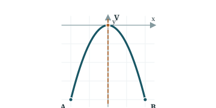
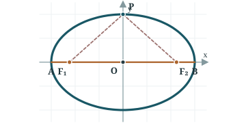
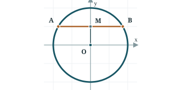
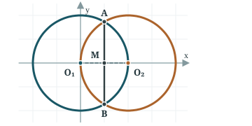

شیب — نسبت تغییر عرض به تغییر طول روی یک خط غیرقائم. (یازدهم، ۲–۴)
فاصله و وسط — فاصله طول پارهخط بین دو نقطه است؛ وسط، نقطهای از پارهخط است که از دو سر فاصلهٔ برابر دارد. (یازدهم، ۴–۷)
فاصله از خط — کوتاهترین فاصله تا نقاط خط؛ همان طول پارهخط عمود. (یازدهم، ۸–۱۰؛ دوازدهم، ۱۳۸)
رأس سهمی — نقطهٔ برخورد سهمی با محور تقارن؛ در نمودار تابع درجهٔ دو، نقطهٔ بازگشت از کاهش به افزایش یا برعکس. (دهم، ۷۸–۸۲)
کانون و خروج از مرکز — دو نقطهٔ ثابت در تعریف بیضی کانون نام دارند. نسبت فاصلهٔ دو کانون به طول قطر بزرگ، خروج از مرکز است. (دوازدهم، ۱۲۸–۱۳۱)
شعاع، وتر و مماس — شعاع مرکز را به محیط وصل میکند؛ وتر دو سر روی محیط دارد. خط مماس فقط یک نقطهٔ مشترک با دایره دارد. (دوازدهم، ۱۳۴–۱۳۹)
لم ۱ ـ خط؛ از شیب تا معادله
یازدهم، ص ۲ تا ۴
شیب یعنی به ازای یک واحد حرکت به راست، عرض چقدر تغییر میکند. خطی با شیب m از (h,k) میگذرد اگر و تنها اگر y−k=m(x−h)؛ خط قائم به جای شیب، معادلهٔ x=h دارد.

شیب خط مورب برابر است با ارتفاع پله تقسیم بر قاعدهٔ آن.
اثبات
دو مثلث پلهای روی یک خط، زاویههای برابر دارند؛ پس نسبت ارتفاع به قاعده در آنها ثابت است. این نسبت همان Δy/Δx است. برای نقطهٔ ثابت و نقطهٔ متغیر خط، طرفین را در x−h ضرب کنید. با چرخش یک پله به اندازهٔ نود درجه، جابهجایی (u,v) به (−v,u) تبدیل میشود؛ پس شیب عمود منفیِ معکوس است، مگر آنکه یکی از خطها قائم باشد.
راه سریع: عرض از مبدأ را با گذاشتن صفر به جای طول بررسی میکنیم. برای خطهای موازی اول شیب و بعد عرض از مبدأ را مقایسه کن؛ شاید دو خط یکی باشند. برای طول ضلع با شیب معلوم، L2=(Δx)2(1+m2) از پیدا کردن هر دو عرض سریعتر است.
خطی از (1,4) تا (4,-2) رسم شده است. شیب این خط چه مقداری است؟
۱) 1/2 ۲) −2 ۳) −1/2 ۴) 2
پاسخ نهایی
گزینهٔ ۲
حل تشریحی
گزینهٔ ۲. ابتدا نقطهٔ آغاز و پایان حرکت را مشخص میکنیم؛ تغییر عرض و تغییر طول را باید در یک جهت بخوانی. شش واحد پایین میرویم و سه واحد به راست؛ نسبت تغییر عرض به طول −6/3=−2 است. m=(−2−4)/(4−1)=−2. علامت منفی با پایین آمدن خط از چپ به راست سازگار است.
خط قائم گذرنده از (−3,5) محور افقی را در چه طولی قطع میکند؟
۱) 5 ۲) 3 ۳) 0 ۴) −3
پاسخ نهایی
گزینهٔ ۴
حل تشریحی
گزینهٔ ۴. در معادلهٔ خط قائم، عرض میتواند هر عددی باشد، اما طول ثابت است. روی خط قائم طول عوض نمیشود. پس نقطهٔ برخورد (−3,0) است. روی محور افقی عرض صفر است؛ تغییر عرض پنج به صفر، طول منفی سه را تغییر نمیدهد.
خطی با شیب -3 از نقطهٔ (2,1) میگذرد. عرض از مبدأ این خط چه مقداری است؟
۱) −7 ۲) 7 ۳) 5 ۴) −5
پاسخ نهایی
گزینهٔ ۲
حل تشریحی
گزینهٔ ۲. عرض از مبدأ همان عرض نقطهای است که طولش صفر است؛ آن را با عرض نقطهٔ دادهشده اشتباه نگیر. در y=−3x+b نقطه را قرار بده: 1=−6+b. بنابراین عرض برخورد با محور قائم هفت است. برای کنترل از طول دو به صفر برگرد: دو واحد به چپ با شیب منفی سه یعنی شش واحد بالا؛ از عرض یک به هفت میرسی.
خط عمود بر 2x−3y=7 از (2,3) میگذرد. طول برخورد آن با محور افقی چیست؟
۱) −2 ۲) 4 ۳) 6 ۴) 0
پاسخ نهایی
گزینهٔ ۲
حل تشریحی
گزینهٔ ۲. اول شیب را از معادله به دست میآوریم: y=(2/3)x−7/3. شیب عمود −3/2 است. شیب خط دادهشده 2/3 است؛ برای سه واحد پایین رفتن روی عمود آن باید دو واحد به راست رفت. از طول دو به چهار میرسیم. در روش جبری y−3=(−3/2)(x−2) است؛ با گذاشتن y=0 همان طول چهار به دست میآید.
گزینهٔ ۱. برای مقایسه، هر دو خط را به شکل عرض برحسب طول مینویسیم. موازی بودن به ضریب طول بستگی دارد، نه به جملهٔ ثابت. شیبها −k/2 و 3 هستند. برابری آنها k=−6 میدهد؛ عرض از مبدأها برابر نیستند. عرض از مبدأها یکدوم و منفی چهارند؛ پس جواب، دو خط متمایز میدهد، نه دو نمایش از یک خط.
خطی از نقطهٔ (2,3) میگذرد و هر دو محور را در بخش مثبت قطع میکند. اگر طول از مبدأ آن دو برابر عرض از مبدأ باشد، مساحت مثلثی که با دو محور میسازد چه مقداری است؟
۱) 24 ۲) 12 ۳) 8 ۴) 16
پاسخ نهایی
گزینهٔ ۴
حل تشریحی
گزینهٔ ۴. دو محل برخورد را (2b,0) و (0,b) بنام. چون برخوردها روی نیممحورهای مثبتاند، قاعده و ارتفاع مثلث همان دو مقدار هستند. اگر عرض از مبدأ b باشد، شیب −1/2 است. پس 3=−1+b و عرض و طول از مبدأ چهار و هشت هستند. نصف حاصلضربشان شانزده است. کنترل: خط y=−x/2+4 از نقطهٔ مسئله میگذرد. حاصلضرب هشت و چهار مساحت مستطیل است؛ مثلث نصف آن است.
گزینهٔ ۳. اول نقطهٔ دوم را پیدا میکنیم. عرضش دو است؛ پس 2=2x−2 و طولش دو است. از (2,2) تا (3,0) یک واحد به راست و دو واحد پایین میرویم؛ شیب منفی دو است. نوشتن y=−2(x−3) هم شیب و هم محل برخورد را حفظ میکند.
راه سریع
از عرض ۲ روی y=2x-2، طول نقطه را یکبار به دست میآوریم و سپس شیب خط را از همان نقطه و برخورد معلوم حساب میکنیم.
گزینهٔ ۱. خط دادهشده به ازای دو واحد حرکت به راست یک واحد پایین میرود. بنابراین عمود آن به ازای هر واحد حرکت به راست دو واحد بالا میرود. برای رسیدن به طول پنج، سه واحد به راست میرویم؛ عرض جدید −1+2×3=5 است. معادلهٔ y=2x−5 نیز سه گزینهٔ دیگر را رد میکند.
راه سریع
شیب خط دادهشده -1/2 است؛ شیب عمود 2 میشود و با جایگذاری گزینهها، نقطهٔ سازگار فوراً مشخص میشود.
خطی دو محور را در (−2,0) و (0,1) قطع میکند. عمودِ گذرنده از مبدأ بر این خط همراه با محور افقی و خود خط مثلثی میسازد. مساحت مثلثِ ساختهشده چه مقداری است؟
گزینهٔ ۱. قاعده را روی محور افقی در نظر میگیریم؛ از طول منفی دو تا صفر، طول قاعده دو است. دو خط y=x/2+1 و y=−2x در طول −2/5 و عرض 4/5 به هم میرسند. ارتفاع نسبت به قاعدهٔ افقی همین عرض است، نه طول پارهخط عمود بر خط مورب. بنابراین مساحت 2×(4/5)/2 است.
راه سریع
برای مساحت، قاعده روی محور افقی است؛ پس ارتفاع فقط عرض نقطهٔ برخورد دو خط است، نه طول عمود روی خط مورب.
خط متغیر y−1=m(x−2) دو محور مثبت را قطع میکند. اگر مجموع طول و عرض از مبدأ شش باشد، حاصلضرب دو شیب ممکن کدام است؟
۱) 1 ۲) 2 ۳) −1/2 ۴) 1/2
پاسخ نهایی
گزینهٔ ۴
حل تشریحی
گزینهٔ ۴. در برخورد با محور قائم، طول صفر است و عرض 1−2m میشود. در برخورد با محور افقی، عرض صفر است و طول 2−1/m میشود. جمع را برابر شش قرار میدهیم: 2m2+3m+1=0. دو شیب −1 و −1/2 هر دو برخوردهای مثبت میدهند و حاصلضربشان یکدوم است.
دو خط 3x-2y=5 و 6x-4y=k موازی و متمایزند. کدام مقدار میتواند k باشد؟
۱) 10 ۲) 5 ۳) 7 ۴) -10
پاسخ نهایی
گزینهٔ ۳
حل تشریحی
ضرایب متغیرها در خط دوم دو برابر خط اولاند. برای آنکه دو خط یکی شوند، باید طرف راست هم دو برابر شود و k=10 باشد؛ چون خطها متمایزند، k نباید ۱۰ باشد. از گزینهها، ۷ مناسب است.
راه سریع
پس از همضریبکردن دو خط، فقط ثابتها را مقایسه کنید؛ برابرشدن ثابتها یعنی دو خط منطبقاند.
برای پارهخط، اختلاف مختصات طول را میسازد و میانگین مختصات وسط را: AB2=(Δx)2+(Δy)2 و M=((x1+x2)/2,(y1+y2)/2).

نقطهٔ میانی در نیمهٔ مسیر افقی و نیمهٔ مسیر قائم قرار دارد.
اثبات
از یک سر پارهخط افقی برو، سپس قائم تا به سر دیگر برسی. فیثاغورس در این مثلث، فرمول فاصله را میدهد؛ اگر یکی از حرکتها صفر باشد همان قدر مطلق اختلاف باقی میماند. برای رسیدن به وسط، نصف هر دو حرکت را انجام بده؛ مثلاً x1+(x2−x1)/2=(x1+x2)/2.
راه سریع: برای مقایسهٔ طولها ریشه نگیر. برای رأس گمشدهٔ متوازیالاضلاع، جمع مختصات دو سر هر قطر یکی است؛ اما اول رأسهای مقابل را تشخیص بده. میانه به وسط ضلع میرود، لزوماً بر آن عمود نیست.
طول پارهخط افقی با دو سر (-4,2) و (3,2) چه مقداری است؟
۱) 7 ۲) 1 ۳) 5 ۴) 49
پاسخ نهایی
گزینهٔ ۱
حل تشریحی
گزینهٔ ۱. روی خط افقی نیازی به محاسبهٔ اختلاف عرض نیست. دو سر پارهخط در دو سوی محور قائم قرار دارند. عرضها یکی هستند؛ فاصله قدر مطلق 3−(−4) است، نه جمع طولهای علامتدار. از منفی چهار تا صفر چهار واحد و از صفر تا سه، سه واحد راه است. پس جواب هفت واحد طول است، نه چهلونه واحد مربع.
وسط دو نقطهٔ (−3,6) و (5,−2) عرض نقطهٔ میانی چه مقداری است؟
۱) 2 ۲) 4 ۳) 1 ۴) −4
پاسخ نهایی
گزینهٔ ۱
حل تشریحی
گزینهٔ ۱. وسط یعنی نصف راه را در هر دو جهت طی کنیم. چون فقط عرض خواسته شده، طولها دادهٔ اضافیاند. فقط عرضها لازماند. میانگین شش و منفی دو، دو است. از عرض شش تا منفی دو، هشت واحد پایین میرویم؛ در نیمهٔ راه چهار واحد پایین آمدهایم و در عرض دو هستیم.
قرینهٔ (2,−1) نسبت به (−1,3) طول مختصات قرینه کدام است؟
۱) −2 ۲) −4 ۳) 0 ۴) 4
پاسخ نهایی
گزینهٔ ۲
حل تشریحی
گزینهٔ ۲. در تقارن مرکزی، تصویر در طرف دیگر مرکز قرار میگیرد؛ فاصلهٔ آن تا مرکز عوض نمیشود. مرکز تقارن وسط دو نقطه است. از طول دو تا منفی یک سه واحد به چپ رفتهایم؛ سه واحد دیگر هم برو. طول جدید −1−3=−4 است. میانگین دو طول 2 و −4 همان −1 میشود.
نقطهای روی محور قائم از (3,4) و (1,0) همفاصله است. عرض این نقطه چه مقداری است؟
۱) 2 ۲) −3 ۳) 4 ۴) 3
پاسخ نهایی
گزینهٔ ۴
حل تشریحی
گزینهٔ ۴. روی محور قائم، طول صفر است نه عرض. چون هر دو فاصله نامنفیاند، میتوانیمم به جای فاصلهها، مربع آنها را برابر قرار دهیم. نقطه را (0,t) در نظر میگیریم. برابری 9+(t−4)2=1+t2 پس از حذف t2 به 8t=24 میرسد. با t=3 مجذور هر دو فاصله ده است. این کنترل هم برابری فاصلهها و هم انتخاب محور درست را نشان میدهد.
در متوازیالاضلاعی، دو رأس مقابل (1,5) و (7,-1) هستند و رأس سوم (3,6) است. عرض مختصات رأس چهارم کدام است؟
۱) −4 ۲) 4 ۳) −2 ۴) 2
پاسخ نهایی
گزینهٔ ۳
حل تشریحی
گزینهٔ ۳. ابتدا دو رأس مقابل را به هم وصل میکنیم. نقطهٔ تلاقی قطرها وسط هر دو است و عرض آن از قطر معلوم، دو است. جمع عرضهای دو سر هر قطر برابر است چون قطرها وسط مشترک دارند. پس 6+y=5−1. پس y=−2. اگر بهاشتباه رأسهای مجاور را میانگین در نظر میگیریمیم، مرکز به دست نمیآید.
برای چه مقدار t، مجموع مجذور فاصلههای نقطهٔ (t,0) از (1,2) و (5,4) کمینه میشود؟ مقدار کمینه کدام است؟
۱) 28 ۲) 32 ۳) 20 ۴) 24
پاسخ نهایی
گزینهٔ ۱
حل تشریحی
گزینهٔ ۱. صورت سؤال مجموع «مجذور فاصلهها» را میخواهد؛ بنابراین رادیکال نمیگیریم. دو حرکت قائم ثابتاند و سهم آنها 22+42=20 است. مجموع برابر (t−1)2+(t−5)2+20=2(t−3)2+28 است. جملهٔ مربعی در طول سه صفر میشود. عدد سه محل رسیدن به کمینه است؛ خود مقدار کمینه بیستوهشت است. در طول سه، دو مجذور فاصله هشت و بیست هستند.
گزینهٔ ۱. اول مرکز تقارن را به دست بیاور: میانگین دو طول سه و میانگین دو عرض دو است. از نقطهٔ اول تا این مرکز چهار واحد بالا میرویم و طول تغییر نمیکند. همین حرکت را یک بار دیگر ادامه میدهیم؛ به (3,6) میرسی. خودِ مرکز، جواب سؤال نیست.
راه سریع
وسط BC را مستقیم حساب میکنیم؛ قرینهٔ A نسبت به آن مرکز با رابطهٔ A'=2M-A به دست میآید.
گزینهٔ ۳. چون عرض دو سر قاعده یکی است، قاعده افقی و ارتفاع قائم است. پس پای ارتفاع طول چهار دارد. پای میانه، وسط قاعده است؛ طول آن 7/2 است. هر دو پا روی یک خط افقیاند، پس اختلاف طولها یعنی نیم واحد کافی است.
راه سریع
چون BC افقی است، پای ارتفاع و پای میانه هر دو روی همان ضلعاند؛ کافی است طولهایشان را روی محور مقایسه کنیم.
گزینهٔ ۴. از میان هر سه رأس متوازیالاضلاع دقیقاً دو رأس مقابل یکدیگرند. چون ترتیب داده نشده باید هر سه جفت را امتحان کنیم. وسط جفت اول (4,2)، وسط اول و سوم (6,5)، و وسط دوم و سوم (8,5) است. تنها نقطهٔ باقیمانده نمیتواند محل برخورد قطرها باشد.
راه سریع
مرکز هر متوازیالاضلاع، وسط یک جفت رأس مقابل است؛ سه جفت ممکن را بررسی میکنیم و نقطهٔ ناممکن را حذف میکنیم.
دو نقطهٔ A(−2,3) و B(4,1) در یک سوی محور افقیاند. اگر P روی محور افقی حرکت کند، کمترین مقدار AP+PB چیست؟
۱) 8 ۲) 2√13 ۳) 10 ۴) 2√10
پاسخ نهایی
گزینهٔ ۲
حل تشریحی
گزینهٔ ۲. نقطهٔ اول را نسبت به محور قرینه کن تا A′(−2,−3) به دست آید. برای هر نقطهٔ محور، AP=A′P است. مسیر شکستهٔ جدید از پارهخط مستقیم A′B کوتاهتر نیست؛ چون عرض دو سر علامت مخالف دارد، این پارهخط واقعاً محور را قطع میکند. پس حد پایین دستیافتنی است: √(62+42)=2√13.
فاصلهٔ نقطه از خط، طول عمود است. برای L: ax+by+c=0 با ضرایب a,b که همزمان صفر نیستند، فاصلهٔ (h,k) برابر |ah+bk+c|/√(a2+b2) است.

برای فاصله تا قاعده، عمود کوتاه را بخوان، نه ضلع مورب را.
اثبات
حرکت در جهت (a,b) بر خط عمود است؛ جهت خط (b,−a) با آن زاویهٔ قائمه دارد. از نقطه به اندازهٔ t(a,b) برو تا به خط برسی. جایگذاری میدهد t=−(ah+bk+c)/(a2+b2). طول حرکت، |t|√(a2+b2) است. هر مسیر مورب تا خط، وتر مثلثی با این عمود است و کوتاهتر نمیشود.
راه سریع: همهٔ جملهها را به یک طرف ببر؛ قدر مطلق را آخر در نظر میگیریم. برای دو خط موازی فقط وقتی ثابتها را از هم از دو طرف کم میکنیم که ضرایب طول و عرض عیناً یکی شده باشند. اگر ارتفاع و قاعده را داریم، دیگر رأس سوم را پیدا نکن.
گزینهٔ ۱. برای فاصله از یک خط قائم، نزدیکترین نقطه را همعرض با نقطهٔ دادهشده در نظر میگیریم. عمود افقی است؛ فقط اختلاف طولها را میخواهیم: |−2−1|=3. پای عمود (1,5) است. تا آن نقطه سه واحد به راست میرویم؛ اختلاف عرض صفر است.
گزینهٔ ۳. خط را به شکل 3x+4y−10=0 مینویسیم و مختصات صفر و صفر را در سمت چپ قرار بده. صورت قدر مطلق ثابت یعنی ده و مخرج پنج است. نسبت دو میشود. نوشتن تنها عدد ده در جواب کافی نیست: اگر معادلهٔ خط را دو برابر کنیم این عدد هم دو برابر میشود. مخرج فرمول همین تغییر مقیاس را خنثی میکند.
نقطهٔ (1,k) روی خط 2x-y=4 قرار دارد. مقدار k چهقدر است؟
۱) 2 ۲) −6 ۳) −2 ۴) 6
پاسخ نهایی
گزینهٔ ۳
حل تشریحی
گزینهٔ ۳. وقتی فاصله صفر است، فرمول فاصله میانبُر سادهای دارد: خود نقطه باید معادلهٔ خط را برقرار کند. فاصله صفر یعنی نقطه روی خط است. در معادله مینویسیم 2−k=4. نتیجه k=−2 است. برای کنترل 2×1−(−2)=4؛ علامت عرض را هنگام انتقال جمله فراموش نکن.
گزینهٔ ۲. این دو خط همجهتاند، ولی ضرایبشان در شکل دادهشده یکسان نیست. قبل از کم کردن ثابتها، مقیاس دو معادله را یکی کن. معادلهٔ اول را نصف کن. ثابتها اکنون شش و یکاند. اختلاف پنج را بر طول بردار عمود، پنج، تقسیم کن. به صورت جبری فاصله |6−1|/√(32+42)=1 میشود؛ اختلاف دوازده و یک در دو معادلهٔ اولیه معنی فاصله ندارد.
قاعدهٔ مثلثی به طول ده روی 4x−3y=1 و رأس مقابل (4,0) است. مساحت مثلث کدام است؟
۱) 30 ۲) 25 ۳) 15 ۴) 10
پاسخ نهایی
گزینهٔ ۳
حل تشریحی
گزینهٔ ۳. برای مساحت به طول ضلعهای مایل نیاز نداریمم؛ ارتفاع نسبت به قاعده همان فاصلهٔ رأس تا خط حامل قاعده است. ارتفاع |16−1|/5=3 است. مساحت نصف حاصلضرب قاعده و ارتفاع است. نتیجه S=(10×3)/2=15 واحد مربع است؛ اگر ارتفاع بیرون خود ضلع هم میافتاد، همین روش معتبر بود.
از نقطهٔ (1,2) چند خط موازی با 3x+4y=0 وجود دارد که فاصلهشان از این نقطه دو واحد باشد؟
۱) 4 ۲) 2 ۳) 0 ۴) 1
پاسخ نهایی
گزینهٔ ۲
حل تشریحی
گزینهٔ ۲. با تغییر جملهٔ ثابت، خط جابهجا میشود و شیب تغییر نمیکند. خط میتواند در هر یک از دو سوی نقطه جای در نظر میگیریمد. آنها را 3x+4y=c مینویسیم. شرط |11−c|=10 دو جواب متفاوت، یک و بیستویک، میدهد. دو معادله 3x+4y=1 و 3x+4y=21 هستند. حذف قدرمطلق بدون بررسی دو علامت، یکی از خطها را از دست میدهد.
گزینهٔ ۱. شیب خط دو و عرض از مبدأ آن دو است، پس شکل مناسب برای فرمول فاصله 2x−y+2=0 است. در مبدأ، صورت کسر دو و مخرج √(4+1) است. با گویا کردن مخرج به 2√5/5 میرسیم؛ فاصله از عرض از مبدأ کوچکتر است چون مسیر عمود کوتاهتر است.
راه سریع
از دو نقطه معادلهٔ خط را میسازیم و فاصلهٔ مبدأ را با قدرمطلق ثابت تقسیم بر √(a2+b2) مییابیم.
گزینهٔ ۴. ارتفاع خواستهشده از رأس سوم آغاز میشود. معادلهٔ خط قاعده 3x+2y−6=0 است؛ هر دو سر قاعده در آن صدق میکنند. به جای حل دستگاه برای پای عمود، مختصات رأس سوم را در فرمول فاصله قرار میدهیم: |3+2−6|/√(9+4)=1/√13.
راه سریع
ارتفاع مثلث همان فاصلهٔ رأس C از خط AB است؛ فرمول فاصلهٔ نقطه از خط از پیدا کردن پای ارتفاع سریعتر است.
گزینهٔ ۴. خط را به صورت x−2y+5=0 مینویسیم. فاصلهٔ مرکز تا خط |3+2+5|/√5=2√5 است. این فاصله نصف ضلع است، نه نصف قطر؛ چون عمود مرکز به وسط ضلع میرسد. پس ضلع 4√5 و مربع آن هشتاد است.
راه سریع
فاصلهٔ مرکز مربع از ضلع نصف طول ضلع است؛ پس پس از محاسبهٔ فاصله، آن را دو برابر میکنیم و مربع میگیریم.
نقطهٔ (t,2) در نوار بستهٔ بین دو خط 3x+4y=5 و 3x+4y=20 است. فاصلهاش از خط اول دو برابر فاصلهاش از خط دوم است. t چه مقداری است؟
۱) 2/3 ۲) 7/3 ۳) −1 ۴) 4
پاسخ نهایی
گزینهٔ ۲
حل تشریحی
گزینهٔ ۲. قرار میدهیم s=3t+8. چون نقطه بین دو خط است، 5≤s≤20. فاصلهها از خط اول و دوم به ترتیب (s−5)/5 و (20−s)/5 هستند. پس s−5=2(20−s) و s=15. از 3t+8=15 جواب به دست میآید؛ بینبودن نقطه علامت قدرمطلقها را تعیین کرد.
معادلهٔ اول را بر ۲ تقسیم میکنیم تا ضرایب همراستا شوند: 3x+4y=5/2. اختلاف ثابتها 10-5/2=15/2 و اندازهٔ بردار ضرایب 5 است؛ فاصله (15/2)/5=3/2 میشود.
راه سریع
برای فاصلهٔ دو خط موازی، ابتدا ضرایب طول و عرض را یکسان کنید؛ سپس اختلاف ثابتها را بر √(a2+b2) تقسیم کنید.
برای y=ax2+bx+c با a≠0، محور تقارن x=h=−b/(2a) است. اگر k=f(h)، شکل رأسی y=a(x−h)2+k است. هر دو نقطهٔ متمایز همعرض نسبت به این محور قرینهاند.

محور تقارن از پایینترین نقطهٔ این سهمی میگذرد.
اثبات
مربع را باز کن: ضریب طول در شکل رأسی −2ah است و باید با b برابر باشد. در دو سوی محور، مربعِ فاصله از محور یکی است؛ پس عرض یکی است. چون مربع منفی نمیشود، رأس برای دهانهٔ رو به بالا کمینه و برای دهانهٔ رو به پایین بیشینه است.
راه سریع: با دیدن دو نقطهٔ همعرض، بهجای تشکیل دستگاه، میانگین طولها را در نظر میگیریم. اگر گزینه دربارهٔ «همیشه پایین» است، هم جهت دهانه و هم ارتفاع رأس را بررسی کن؛ مماس بودن کافی نیست.
سهمی y=(x-3)2+4 رأس دارد. عرض رأس این سهمی چه مقداری است؟
۱) −3 ۲) −4 ۳) 3 ۴) 4
پاسخ نهایی
گزینهٔ ۴
حل تشریحی
گزینهٔ ۴. تابع در شکل رأسی نوشته شده است؛ عدد داخل پرانتز طول رأس و جملهٔ بیرون آن عرض رأس را مشخص میکند. مربع در طول سه صفر میشود. کمترین عرض همان عدد بیرون مربع است. مختصات کامل رأس (3,4) است؛ سؤال مؤلفهٔ دوم را خواسته است.
گزینهٔ ۴. در ax2+bx+c ابتدا ضرایب را تشخیص بده: a=2 و b=8. جملهٔ ثابت روی محل محور تقارن اثری ندارد. منفی هشت را بر دو برابر ضریب درجهٔ دو، یعنی چهار، تقسیم کن. محور خط قائم x=−2 است؛ مثبت بودن ضریب هشت به معنی مثبت بودن طول رأس نیست.
سهمی در طولهای -2 و 6 عرض یکسانی دارد. طول مختصات رأس این سهمی کدام است؟
۱) 8 ۲) 2 ۳) −4 ۴) 4
پاسخ نهایی
گزینهٔ ۲
حل تشریحی
گزینهٔ ۲. دو نقطهٔ متمایز با عرض یکسان روی دو شاخهٔ سهمی قرار میگیرند. فاصلهٔ افقی آنها از محور تقارن برابر است. محور در نیمهٔ راه این دو طول قرار دارد: (−2+6)/2=2. عدد دو از منفی دو و شش، هر کدام چهار واحد فاصله دارد؛ بنابراین بدون دانستن ضریب درجهٔ دو هم طول رأس معلوم است.
گزینهٔ ۲. ضریب مربع منفی است، پس دهانه رو به پایین باز میشود؛ بیشترین عرض در رأس است. مسیر را 10−(x−3)2 مینویسیم. در طول سه به ارتفاع ده میرسد و بیشتر نمیشود. چون یک مربع همیشه نامنفی است، از ده چیزی نامنفی کم میکنیم. سه محل وقوع بیشینه است، نه مقدار ارتفاع.
سهمی با رأس (1,−2) از (3,10) میگذرد. ضریب درجهٔ دوِ سهمی کدام است؟
۱) 12 ۲) 6 ۳) 3 ۴) −3
پاسخ نهایی
گزینهٔ ۳
حل تشریحی
گزینهٔ ۳. وقتی رأس معلوم است از y=a(x−1)2−2 شروع کن. فقط یک مجهول مانده که نقطهٔ دیگر آن را تعیین میکند. در شکل رأسی داریمم 10=4a−2؛ پس دوازده را بر چهار تقسیم کن. از طول یک تا سه، فاصله از محور دو است؛ عرض دوازده واحد زیاد شده. چون مربعِ دو چهار است، ضریب رشد 12/4=3 میشود.
صفرهای سهمی 1 و 5 و عرض رأس −8 است. عرض از مبدأ سهمی چه مقداری است؟
۱) 5 ۲) 8 ۳) 10 ۴) −10
پاسخ نهایی
گزینهٔ ۳
حل تشریحی
گزینهٔ ۳. دو ریشه دو عامل را تعیین میکنند، اما ضریب مشترک هنوز معلوم نیست. از عرض رأس برای یافتن آن استفاده میکنیم. تابع a(x−1)(x−5) است. وسط صفرها سه است؛ −4a=−8 و در طول صفر عرض ده میشود. ضریب دو است. برای عرض از مبدأ طول صفر قرار میدهیم: 2(−1)(−5)=10. صفرهای تابع را با نقطهٔ برخورد با محور قائم اشتباه نگیر.
خط y=6 سهمی y=(x−1)2+2 را در دو نقطه قطع میکند. فاصلهٔ دو نقطهٔ برخورد چند واحد است؟
۱) 2 ۲) 8 ۳) √2 ۴) 4
پاسخ نهایی
گزینهٔ ۴
حل تشریحی
گزینهٔ ۴. دو نقطه همعرضاند؛ فاصلهٔ آنها فقط اختلاف طولهاست. در معادله عرض شش قرار میدهیم: (x−1)2=4. پس دو طول یک منهای دو و یک بهعلاوهٔ دو هستند. فاصله چهار است؛ عدد دو فاصلهٔ هر نقطه تا محور تقارن است.
مماس افقی سهمی y=-2x2+8x+k روی خط y=3 قرار دارد. عرض از مبدأ این سهمی چه مقداری است؟
۱) 5 ۲) −5 ۳) 3 ۴) −8
پاسخ نهایی
گزینهٔ ۲
حل تشریحی
گزینهٔ ۲. مماس افقی در رأس است، پس سه عرضِ رأس است نه عرض از مبدأ. با کامل کردن مربع، تابع −2(x−2)2+8+k میشود. بیشترین عرض 8+k=3 است؛ پس k=−5. در طول صفر عرض دقیقاً همین مقدار است.
خط y=x+t و سهمی y=x2-3x+6 فقط یک نقطهٔ مشترک دارند. طول مختصات نقطهٔ تماس کدام است؟
۱) 2 ۲) 1 ۳) 4 ۴) 3/2
پاسخ نهایی
گزینهٔ ۱
حل تشریحی
گزینهٔ ۱. در نقطهٔ مشترک عرضها برابرند. با انتقال جملهها میرسیم به (x−2)2=t−2. اگر سمت راست مثبت باشد دو طول مختلف داریمم و اگر منفی باشد هیچکدام. برای یک برخورد، سمت راست صفر است؛ طول نقطه دو است، نه طول رأس سهمی اصلی.
برای چه دو مقداری از m، عرض رأس سهمی y=x2-2mx+3m برابر دو میشود؟ فاصلهٔ دو رأس متناظر چه مقداری است؟
۱) 2 ۲) 1 ۳) √2 ۴) 3
پاسخ نهایی
گزینهٔ ۲
حل تشریحی
گزینهٔ ۲. شکل رأسی y=(x−m)2+3m−m2 نشان میدهد رأس طول m دارد. شرط عرض دو میدهد m2−3m+2=0 با ریشههای یک و دو. رأسها (1,2) و (2,2) همعرضاند؛ بنابراین فاصلهشان یک است.
مجموع فاصلههای هر نقطهٔ بیضی تا دو کانون ثابت و برابر قطر بزرگ 2a است. اگر 2c فاصلهٔ کانونها و b نیمقطر کوچک باشد، a2=b2+c2 و خروج از مرکز e=c/a است.

از سر قطر کوچک تا دو کانون، دو فاصلهٔ برابر داریمم.
اثبات
سر قطر بزرگ را در نظر میگیریم: دو فاصلهٔ کانونی آن a−c و a+c هستند، پس ثابت نخ 2a است. سر قطر کوچک روی عمودمنصف دو کانون قرار دارد و هر دو فاصلهاش برابر a است. با وصل کردن این سر به مرکز و یک کانون، مثلث قائم با ضلعهای b,c و وتر a به دست میآید.
راه سریع: اول هر قطر کامل را نصف کن. خروج از مرکز واحد ندارد و از یک کوچکتر است. اگر اندازهٔ شکل دو برابر شود، خروج از مرکز عوض نمیشود؛ گزینهای را که فقط به مقیاس وابسته است حذف میکنیم.
طول قطر بزرگ بیضی ده واحد است. مجموع فاصلههای هر نقطهٔ بیضی تا دو کانون چه مقداری است؟
۱) 20 ۲) 10 ۳) 5 ۴) 8
پاسخ نهایی
گزینهٔ ۲
حل تشریحی
گزینهٔ ۲. قطر بزرگ یک طول کامل است. نخِ کشیده از کانون اول به نقطه و از آنجا به کانون دوم همین طول را دارد. تعریف بیضی همین مجموع ثابت است؛ آن را دوباره نصف نکن. پس حتی اگر نقطه روی بیضی جابهجا شود، مجموع ده میماند. لازم نیست فاصلهٔ هر کانون را جداگانه بدانیم.
دو کانون (−4,1) و (2,1) هستند. طول مختصات مرکز بیضی کدام است؟
۱) 3 ۲) 1 ۳) −3 ۴) −1
پاسخ نهایی
گزینهٔ ۴
حل تشریحی
گزینهٔ ۴. کانونها نسبت به مرکز قرینهاند. چون عرض هر دو یک است، فقط روی محور افقی نصف راه را طی میکنیم. مرکز وسط دو کانون است؛ میانگین طولها منفی یک میشود. از طول منفی چهار سه واحد به راست میرویم: مرکز (−1,1) است و طول آن منفی یک.
نیمقطر بزرگ پنج و کوچک چهار است. فاصلهٔ دو کانون بیضی چه مقداری است؟
۱) 8 ۲) 9 ۳) 3 ۴) 6
پاسخ نهایی
گزینهٔ ۴
حل تشریحی
گزینهٔ ۴. رابطهٔ مثلث کانونی را برای نیمطولها مینویسیم؛ در این مثلث نیمقطر بزرگ وتر است. از c2=25−16 میفهمیم نیمفاصله سه است. دو برابرش شش میشود. اگر سه را انتخاب کنی فاصلهٔ کانون تا مرکز را یافتهای. بین خود دو کانون دو تا از این پارهخطها قرار دارد.
خروج از مرکز سهپنجم و قطر بزرگ بیست است. طول قطر کوچک بیضی کدام است؟
۱) 8 ۲) 16 ۳) 12 ۴) 6
پاسخ نهایی
گزینهٔ ۲
حل تشریحی
گزینهٔ ۲. خروج از مرکز نسبت c/a است. نخست طول کامل را نصف کن تا بتوانی از این نسبت استفاده کنی. نیمقطر بزرگ ده و نیمفاصلهٔ کانونی شش است. b2=100−36=64، پس قطر کوچک شانزده است. رادیکال شصتوچهار، هشت، فقط نیمقطر کوچک است. جواب نهایی شانزده از قطر بزرگ بیست کوتاهتر است، همانطور که باید باشد.
فاصلههای نقطهای روی بیضی تا کانونها سه و هفت است. با فاصلهٔ کانونی شش، نیمقطر کوچک بیضی چه مقداری است؟
۱) 4 ۲) 3 ۳) 5 ۴) 8
پاسخ نهایی
گزینهٔ ۱
حل تشریحی
گزینهٔ ۱. جمع دو فاصله طول قطر بزرگ را میدهد. فاصلهٔ بین دو کانون هم طول کامل است، پس برای مثلث قائم باید آن را نصف کرد. از جمع فاصلهها 2a=10 و از فاصلهٔ کانونی c=3 است. بنابراین b2=25−9. نیمقطر کوچک √16=4 است. این بار سؤال «نیمقطر» میخواهد، پس ضرب نهایی در دو نداریمم.
نزدیکترین و دورترین فاصلهٔ یک کانون تا نقاط بیضی دو و هشت است. خروج از مرکز بیضی کدام است؟
۱) 4/5 ۲) 1/2 ۳) 1/4 ۴) 3/5
پاسخ نهایی
گزینهٔ ۴
حل تشریحی
گزینهٔ ۴. فرض میکنیم فاصلههای یک نقطهٔ بیضی از دو کانون u و v باشند. جمعشان ثابت است و اختلافشان از فاصلهٔ دو کانون بیشتر نمیشود؛ برابری در سر قطر بزرگ رخ میدهد. در دو سر قطر بزرگ، فاصلهها a−c و a+c هستند؛ جمع و تفاضل دو معادله a=5,c=3 میدهد. این دو حد از نابرابری مثلث و ثابت بودن مجموع فاصلهها نیز نتیجه میشوند. پس e=c/a=3/5. نسبت گرفتن مستقیم دو و هشت (یکچهارم) نسبت دو فاصله است، نه تعریف خروج از مرکز.
بیضی کانونهایی به فاصلهٔ ده دارد. یک نقطهٔ آن از کانون اول چهار و از کانون دوم هشت واحد دور است. فاصلهٔ سرِ قطر کوچک از مرکز بیضی چند واحد است؟
۱) 2√11 ۲) 6 ۳) √11 ۴) √39
پاسخ نهایی
گزینهٔ ۳
حل تشریحی
گزینهٔ ۳. مجموع دو فاصله دوازده است، پس نیمقطر بزرگ شش است. فاصلهٔ یک کانون تا مرکز پنج است. مثلث قائمِ سر قطر کوچک، مرکز و کانون وتر شش دارد؛ ضلع مجهول √(36−25)=√11 است. اینجا فقط نیمقطر خواسته شده است.
در سر قطر کوچک یک بیضی، دو پارهخطی که به کانونها میرسند بر هم عمودند. خروج از مرکز بیضی چه مقداری است؟
۱) 1/4 ۲) 1/2 ۳) √2/2 ۴) √3/2
پاسخ نهایی
گزینهٔ ۳
حل تشریحی
گزینهٔ ۳. دو پارهخط کانونی مساویاند چون نقطه روی عمودمنصف کانونهاست. هر یک طول a دارد چون جمعشان 2a است. مثلث متساویالساقین قائم است؛ فاصلهٔ دو کانون، یعنی وتر، a√2 است. با تقسیم 2c=a√2 بر 2a پاسخ به دست میآید.
بیضی قطر بزرگ شانزده و فاصلهٔ دو کانون ده واحد دارد. بیشترین مساحت مثلثی با دو رأس روی کانونها و رأس سوم روی بیضی چه مقداری است؟
۱) 40 ۲) 8√39 ۳) 10√39 ۴) 5√39
پاسخ نهایی
گزینهٔ ۴
حل تشریحی
گزینهٔ ۴. قاعدهٔ مثلث ثابت و برابر ده است، پس فقط ارتفاع را باید بیشینه کنیم. بزرگترین فاصله از خط کانونها در سر قطر کوچک رخ میدهد و برابر b است. با a=8 و c=5 داریمم b=√39. نصف حاصلضرب قاعده در این ارتفاع، 5√39 میشود.
در بیضیای با قطر بزرگ هجده و خروج از مرکز یکسوم، نسبت فاصلههای یک نقطه از دو کانون حداکثر چقدر میشود؟ (فاصلهٔ بزرگتر در صورت)
۱) 2 ۲) 3/2 ۳) 3 ۴) 4
پاسخ نهایی
گزینهٔ ۱
حل تشریحی
گزینهٔ ۱. نیمقطر بزرگ نه و نیمفاصلهٔ دو کانون سه است. فاصلهها مجموع ثابت هجده دارند؛ برای بیشینه کردن نسبت، فاصلهٔ کوچکتر باید کمینه شود. اختلاف دو فاصله از فاصلهٔ کانونها یعنی شش بیشتر نمیشود. در سر قطر بزرگ این حد حاصل میشود: فاصلهها دوازده و شش و نسبت دو است.
دایره مکان نقاطی است که از مرکز (h,k) فاصلهٔ ثابت r>0 دارند، پس (x−h)2+(y−k)2=r2. اگر فاصلهٔ مرکز از خط d باشد، برای d≤r طول وتر 2√(r2−d2) است؛ در حالت برابری فقط یک نقطهٔ تماس داریمم.

عمود مرکز بر وتر، آن را نصف میکند.
اثبات
از مرکز بر وتر عمود کن. دو مثلث قائم حاصل، وترهای برابر (دو شعاع) و یک ضلع مشترک دارند؛ پس دو نیمهٔ وتر برابرند. فیثاغورس برای یک نیمه فرمول را میدهد. اگر فاصلهٔ خط بیش از شعاع باشد، حتی نزدیکترین نقطهٔ خط هم بیرون دایره است.
راه سریع: مرکز از ضرایب خطی با «نصف و قرینه» پیدا میشود، به شرط آنکه ضریب مربعها یک باشد. برای وتر کوتاهتر، خط دورتر از مرکز لازم است. در تماس، شعاع را عمود بر خط بکش؛ سراغ دستگاه درجهدو نرو.
گزینهٔ ۲. معادله را با (x−h)2+(y−k)2=r2 مقایسه کن. در پرانتز دوم علامتِ نوشتهشده عکس علامتِ عرض مرکز است. برای صفر شدن پرانتز دوم، عرض باید منفی سه باشد. مرکز کامل (2,−3) و شعاع چهار است. عدد چهار اندازه است، نه مختصات مرکز.
دایرهٔ مرکز (1,2) از (4,6) میگذرد. شعاع دایره چه مقداری است؟
۱) 4 ۲) 25 ۳) 5 ۴) 7
پاسخ نهایی
گزینهٔ ۳
حل تشریحی
گزینهٔ ۳. شعاع از مرکز تا هر نقطهٔ محیط کشیده میشود. دو جابهجایی افقی و قائم، ساقهای یک مثلث قائماند. اختلافها سه و چهارند، پس طول شعاع پنج است. r2=(4−1)2+(6−2)2=25. چون شعاع طول است، ریشهٔ مثبت یعنی پنج را برمیداریمم.
گزینهٔ ۱. ثابت یک را به سمت راست میبریم؛ برای کامل کردن x2−6x عدد نه و برای y2+2y عدد یک را به هر دو طرف اضافه کن. با افزودن نه و یک به دو مربع، معادله (x−3)2+(y+1)2=9 میشود. سمت راست −1+9+1=9 مربع شعاع است. بنابراین شعاع سه است، نه نه.
خط y=4 دایرهای به مرکز مبدأ و شعاع پنج را قطع میکند. طول وتر حاصل چه مقداری است؟
۱) 6 ۲) 8 ۳) 4 ۴) 3
پاسخ نهایی
گزینهٔ ۱
حل تشریحی
گزینهٔ ۱. از مرکز تا خط افقی عمودی به طول چهار رسم کن. پای عمود وسط وتر است و شعاع پنج تا انتهای وتر میرود. فاصله چهار است. نیموتر √(25−16)=3 و کل وتر شش است. دو انتهای وتر (-3,4) و (3,4) هستند. فاصلهٔ آنها شش است؛ سه تنها طول نیمی از وتر است.
گزینهٔ ۴. شیب صفر یعنی خط افقی. برای تماس باید فاصلهٔ خانۀ مرکز از خط درست به اندازهٔ شعاع باشد. خط افقی باید سه واحد بالا یا پایین مرکز باشد؛ عرضهای چهار و منفی دو هر دو جواباند. مرکز (-2,1) و شعاع سه است. شرط |y−1|=3 دو خط y=4 و y=−2 میدهد.
معادلهٔ دایره x2+y2=25 است. خط مماس در نقطهٔ (3,4) محور قائم را در چه عرضی قطع میکند؟
۱) −3/4 ۲) 25/3 ۳) 4 ۴) 25/4
پاسخ نهایی
گزینهٔ ۴
حل تشریحی
گزینهٔ ۴. شعاع را از مبدأ به نقطهٔ تماس وصل کن. چون مماس بر شعاع عمود است، شیب آن −3/4 خواهد بود. شعاع شیب چهارسوم دارد. معادلهٔ عمود آن از نقطهٔ تماس 3x+4y=25 است؛ طول را صفر قرار میدهیم. در 3x+4y=25 قرار میدهیم x=0؛ عرض برخورد 25/4 است. منفی سهچهارم شیب است، نه عرض از مبدأ.
گزینهٔ ۴. مرکز را (h,k) بنام. چون روی خط قطر است، h−k=2. فاصلههایش تا دو نقطه برابرند: h2+(k−1)2=(h−3)2+k2. پس 3h−k=4. با تفریق معادلهها h=1 و k=−1 میشود. فاصلهٔ مرکز تا (0,1) برابر √5 است.
راه سریع
مرکز روی خطِ حامل قطر قرار دارد و از دو نقطهٔ دادهشده فاصلهٔ برابر دارد؛ این دو شرط یک دستگاه خطی ساده میسازند.
از نقطهٔ (8,1) بر دایرهای با مرکز (3,1) و شعاع سه مماس رسم میکنیم. طول پارهخط مماس چه مقداری است؟
۱) 5 ۲) √34 ۳) 4 ۴) 2
پاسخ نهایی
گزینهٔ ۳
حل تشریحی
گزینهٔ ۳. فاصلهٔ نقطه تا مرکز پنج است، ولی این پارهخط مماس نیست. اگر نقطهٔ تماس را به مرکز وصل کنی، شعاع و مماس زاویهٔ راست میسازند. اکنون وتر مثلث پنج و یکی از ضلعها سه است؛ ضلع دیگر √(25−9)=4 است.
روی دایرهٔ مرکز مبدأ و شعاع ده، دو وتر موازی در دو سوی مرکز طولهای دوازده و شانزده دارند. فاصلهٔ دو خط حامل این وترها چند واحد است؟
۱) 7 ۲) 10 ۳) 14 ۴) 2
پاسخ نهایی
گزینهٔ ۳
حل تشریحی
گزینهٔ ۳. عمود مرکز، هر وتر را نصف میکند. نیموترهای شش و هشت، با شعاع ده مثلث قائم میسازند؛ فاصلههای مرکز تا آنها به ترتیب هشت و شش است. چون وترها در دو سوی مرکزند، باید این فاصلهها را جمع کرد، نه تفریق.
خط y=x+t از دایرهٔ (x−1)2+(y−3)2=9 وتری به طول چهار جدا میکند. حاصلضرب دو مقدار ممکن t کدام است؟
۱) 4 ۲) −6 ۳) 6 ۴) −10
پاسخ نهایی
گزینهٔ ۲
حل تشریحی
گزینهٔ ۲. نیموتر دو و شعاع سه است؛ پس مجذور فاصلهٔ مرکز تا خط پنج است. از سوی دیگر برای خط x−y+t=0 این مجذور (t−2)2/2 است. بنابراین t=2±√10. ضرب دو مقدار مزدوج 4−10=−6 میشود؛ لازم نیست رادیکال را اعشاری کنی.
برای دو مرکز متمایز با فاصلهٔ d، دو نقطهٔ مشترک داریمم اگر |R−r|<d<R+r. تساوی با حد پایین تماس درونی و تساوی با حد بالا تماس بیرونی است. بیرون این بازه، دو محیط نقطهٔ مشترک ندارند.

خط مرکزها عمودمنصف وتر مشترک است.
اثبات
اگر نقطهٔ مشترکی باشد، با دو مرکز مثلثی با ضلعهای R,r,d میسازد. نابرابریهای اکید مثلث دقیقاً همان بازهاند و مثلث را در دو سوی خط مرکزها میتوان ساخت. در حالت تساوی سه نقطه همخط میشوند. با تفریق دو معادلهٔ استاندارد، مربعها حذف میشوند؛ خط حاصل هنگام تقاطع از هر دو نقطهٔ مشترک میگذرد.
راه سریع: قبل از تفریق، ضریب مربعها را یکی کن. مرکز مشترک را جدا بررسی کن: شعاعهای برابر یعنی دو دایره منطبقاند، نه مماس. برای دورترین دو نقطهٔ دو محیط، روی خط مرکزها به دو سمت بیرون برو.
دو شعاع سه و دو و فاصلهٔ مرکزها شش است. تعداد نقاط مشترک این دو دایره کدام است؟
۱) 1 ۲) 2 ۳) 0 ۴) ∞
پاسخ نهایی
گزینهٔ ۳
حل تشریحی
گزینهٔ ۳. ابتدا فاصلهٔ مراکز را با مجموع شعاعها مقایسه میکنیم؛ این مقایسه میگوید دو محیط اصلاً به هم میرسند یا نه. جمع شعاعها پنج است. حتی نزدیکترین سرهای دو دایره هم یک واحد از هم فاصله دارند. چون 6>3+2، دو دایره متخارجاند. وجود فاصلهٔ خالی یعنی تعداد نقاط مشترک صفر است.
دو شعاع پنج و سه در تماس درونیاند. فاصلهٔ دو مرکز چه مقداری است؟
۱) 5 ۲) 3 ۳) 2 ۴) 8
پاسخ نهایی
گزینهٔ ۳
حل تشریحی
گزینهٔ ۳. در تماس درونی دایرهٔ کوچک داخل بزرگ است. مرکزها و نقطهٔ تماس بر یک راستا هستند و دو مرکز در یک سوی تماس قرار میگیرند. شعاع کوچک در راستای شعاع بزرگ قرار میگیرد. اختلاف پنج و سه فاصلهٔ مرکزهاست. پس d=5−3=2. جمع هشت فقط برای تماس بیرونی درست است.
گزینهٔ ۱. هممرکز بودن یعنی مرکز یکی است؛ «متمایز» بودن یعنی دو محیط بر هم منطبق نیستند. هر نقطه فقط یک فاصله تا مرکز دارد و شعاعهای این دو دایره متفاوتاند. اگر نقطهای مشترک بود، فاصلهاش تا مرکز واحد باید همزمان دو عدد متفاوت میشد. پس چنین نقطهای وجود ندارد.
دو شعاع چهار و سه دارند. چند فاصلهٔ صحیح بین مرکزها به دو نقطهٔ مشترک میانجامد؟
۱) 7 ۲) 6 ۳) 5 ۴) 4
پاسخ نهایی
گزینهٔ ۳
حل تشریحی
گزینهٔ ۳. برای دو برخورد باید هم از تماس درونی عبور کنیم و هم هنوز به تماس بیرونی نرسیده باشیم. فاصله باید اکیداً بین یک و هفت باشد. اعداد دو تا شش پنج مقدارند. بازه 1<d<7 است. یک و هفت را نشمار؛ هر کدام فقط یک برخورد دارند.
در دو دایره با شعاعهای دو و سه و فاصلهٔ مرکزهای هشت، کمترین فاصلهٔ بین دو محیط چند واحد است؟
۱) 3 ۲) 7 ۳) 5 ۴) 13
پاسخ نهایی
گزینهٔ ۱
حل تشریحی
گزینهٔ ۱. برای کوتاهترین فاصله، دو نقطه از دو محیط را روی پارهخط مرکزها و رو به یکدیگر در نظر میگیریم. دایرهها بیرون هم هستند. روی پارهخط مرکزها از دو سر به اندازهٔ شعاعها پیش برو؛ سه واحد میماند و مسیر مورب کوتاهتر نیست. فاصلهٔ باقیمانده 8−3−2=3 است. شعاعها از فاصلهٔ مرکزها کم میشوند چون هر دو ما را به سمت دایرهٔ دیگر میبرند.
دو دایره با شعاع پنج و مرکزهای (0,0) و (6,0) یکدیگر را قطع میکنند. طول وتر مشترک آنها چه مقداری است؟
۱) 10 ۲) 6 ۳) 4 ۴) 8
پاسخ نهایی
گزینهٔ ۴
حل تشریحی
گزینهٔ ۴. نقطهٔ مشترک از هر دو مرکز به یک اندازه دور است؛ پس روی عمودمنصف پارهخط مرکزها قرار دارد. چون شعاعها برابرند وتر روی عمودمنصف مرکزها، یعنی x=3 است. نیموتر √(25−9)=4 است. وسط وتر (3,0) و دو انتها (3,4) و (3,−4) هستند؛ اختلاف عرضها هشت است.
شعاع دو دایره سه و چهار است و مرکزهایشان پنج واحد فاصله دارند. زاویهٔ بین شعاعهای رسمشده تا یک نقطهٔ تقاطع چقدر است؟
۱) 60° ۲) 45° ۳) 120° ۴) 90°
پاسخ نهایی
گزینهٔ ۴
حل تشریحی
گزینهٔ ۴. با وصل کردن دو مرکز به نقطهٔ مشترک، مثلثی با ضلعهای سه، چهار و پنج داریم. چون 32+42=52، زاویهٔ روبهروی ضلع پنج قائمه است. همین زاویه در نقطهٔ تقاطع و بین دو شعاع قرار دارد.
دو دایرهٔ x2+y2=25 و (x-6)2+y2=13 یکدیگر را قطع میکنند. طول وتر مشترک آنها چه مقداری است؟
۱) 3 ۲) 6 ۳) 8 ۴) 4
پاسخ نهایی
گزینهٔ ۲
حل تشریحی
گزینهٔ ۲. نقطهٔ مشترک در هر دو معادله صدق میکند؛ دومی را باز کن و اولی را از دو طرف کم میکنیم تا −12x+36=−12 و x=4 به دست آید. با گذاشتن این طول در معادلهٔ اول، عرضها سه و منفی سه میشوند. چون وتر قائم است، اختلاف عرضها طول آن است.
دو دایره با شعاعهای پنج و سه، وتری مشترک به طول شش دارند. فاصلهٔ مرکزهای این دو دایره چه مقداری است؟
۱) 2 ۲) 6 ۳) 8 ۴) 4
پاسخ نهایی
گزینهٔ ۴
حل تشریحی
گزینهٔ ۴. وتر در دایرهٔ کوچک درست به اندازهٔ قطر است، پس از مرکز آن میگذرد. خط مرکزها عمودمنصف وتر است؛ از مرکز بزرگ تا وسط وتر مثلث قائمی با وتر پنج و ضلع سه میسازیم. ضلع باقیمانده چهار است و چون وسط وتر همان مرکز کوچک است، این چهار خودِ فاصلهٔ مرکزهاست.
مرکزهای دو دایره روی محور افقی در طولهای صفر و هشت قرار دارند. خط x=6 حامل وتر مشترک آنهاست. اگر شعاع دایرهٔ دوم √13 باشد، شعاع دایرهٔ اول چه مقداری است؟
۱) 6 ۲) √13 ۳) √41 ۴) 3√5
پاسخ نهایی
گزینهٔ ۴
حل تشریحی
گزینهٔ ۴. فاصلهٔ مرکز دوم از وتر دو است. پس مجذور نیموتر مشترک 13−4=9 است. برای مرکز اول، فاصله تا همان خط شش است و همان نیموتر را داریمم. بنابراین مجذور شعاع اول 36+9=45 است. استفاده از یک نیموتر مشترک جای حل همزمان دو معادله را میگیرد.
دو دایرهٔ شعاع ۱۰ مرکزهایی به فاصلهٔ ۱۲ دارند. طول وتر مشترک آنها کدام است؟
۱) 16 ۲) 12 ۳) 8 ۴) 20
پاسخ نهایی
گزینهٔ ۱
حل تشریحی
بهسبب برابری شعاعها، وتر مشترک عمودمنصف مرکزهاست و از وسط پارهخط مرکزها میگذرد؛ فاصلهٔ هر مرکز تا وتر ۶ است. نیموتر √(102-62)=8، پس طول وتر ۱۶ است.
راه سریع
در دو دایرهٔ هماندازه، نصف وتر را از یک مثلث قائم با ضلعهای شعاع و نصف فاصلهٔ مرکزها پیدا کنید.
دو دایرهٔ با شعاعهای ۱۰ و ۶، مرکزهایی به فاصلهٔ ۸ دارند. طول وتر مشترک آنها چقدر است؟
۱) 12 ۲) 8 ۳) 16 ۴) 6
پاسخ نهایی
گزینهٔ ۱
حل تشریحی
اگر فاصلهٔ مرکز اول تا وتر را x بگیریم، فاصلهٔ مرکز دوم تا همان وتر 8-x است. از دو مثلث قائم داریم 102-x2=62-(8-x)2 و در نتیجه x=8؛ نیموتر √(100-64)=6 و طول وتر ۱۲ است.
راه سریع
برای وتر مشترک، فاصلهٔ مراکز تا خط وتر را روی خط مرکزها مکملِ فاصلهٔ مرکزها بگیرید؛ سپس یک نیموتر را حساب کنید.